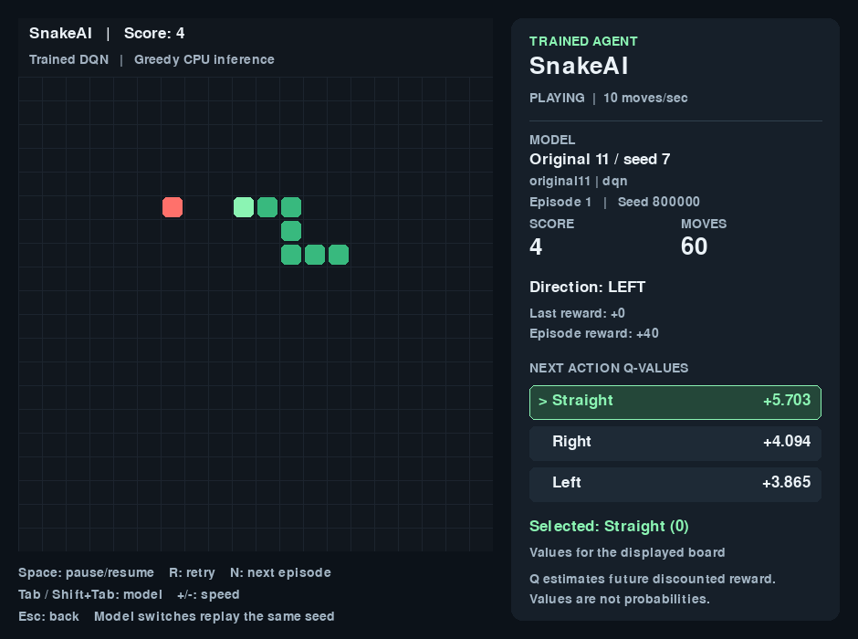
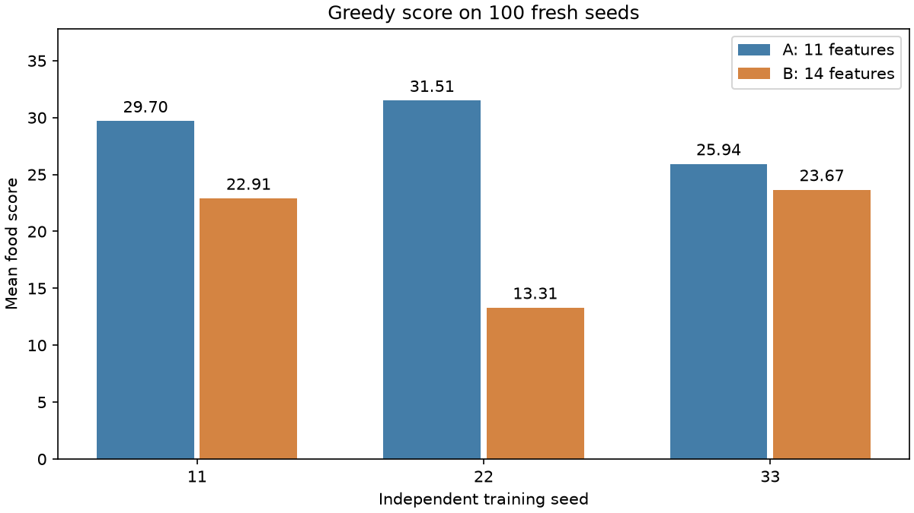
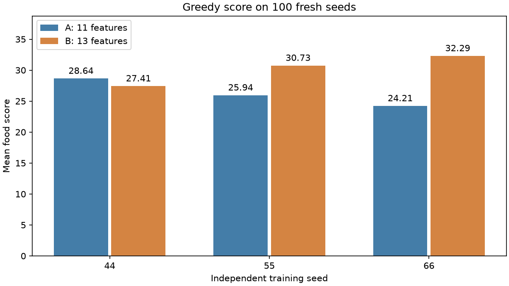
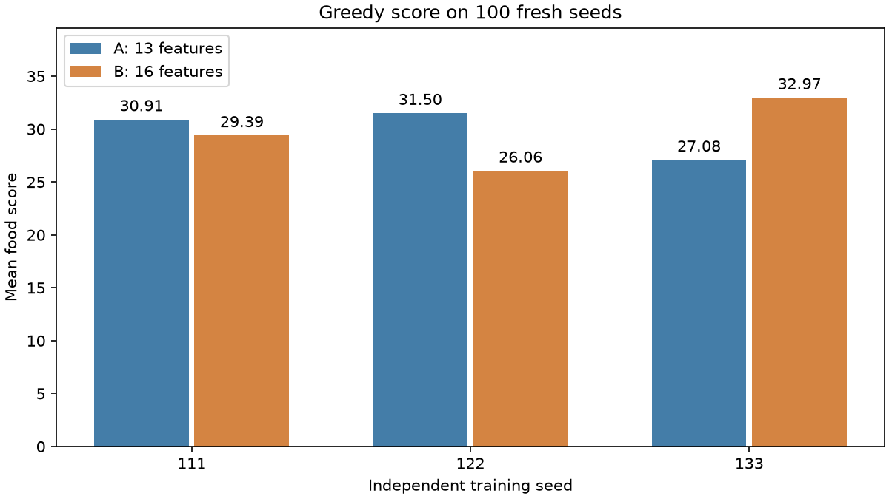
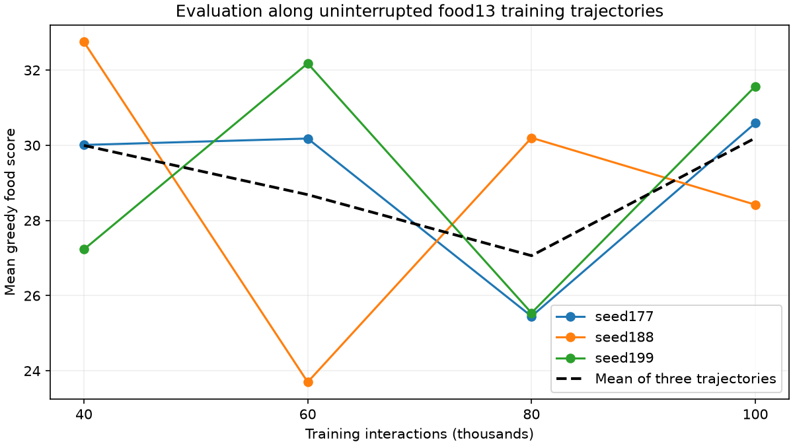
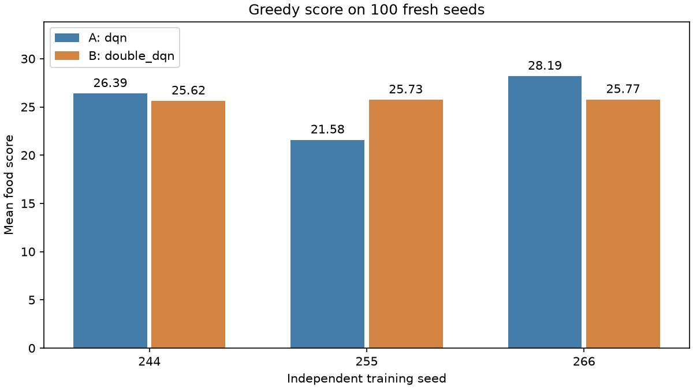

What actually improved
the agent?
A measured study of observation design, training duration and Double DQN in Snake.
One game engine. Reproducible PyTorch experiments. Conclusions that include the negative results.
Initial learning result
Original11; one training seed 7, 500 episodes. Paired 100-episode evaluation 900000–900099.
This initial result demonstrates learning for one model. It does not establish generalisation across independent training runs; every episode ended in collision.

Obstacle distances
500 episodes or 100k moves per run; actual experience counts differ. Training seeds 11, 22, 33; evaluation 910000–910099.
| Comparison | Mean food | Sample SD* |
|---|---|---|
| Original11 | 29.05 | 2.84 |
| Geometry14 | 19.96 | 5.77 |
Static obstacle distances did not improve score on any of the three pairs.
Mean paired B − A: -9.09.
View the original comparison chart

Food displacement
40k moves per independent model. Training seeds 44, 55, 66; evaluation 930000–930099.
| Comparison | Mean food | Sample SD* |
|---|---|---|
| Original11 | 26.26 | 2.23 |
| Food13 | 30.14 | 2.49 |
Food13 improved two pairs, with a tentative average advantage.
Mean paired B − A: +3.88.
View the original comparison chart

Static body awareness
40k moves per independent model. Training seeds 111, 122, 133; evaluation 950000–950099.
| Comparison | Mean food | Sample SD* |
|---|---|---|
| Food13 | 29.83 | 2.40 |
| Body16 | 29.47 | 3.46 |
Body16 improved one pair; no consistent benefit was observed.
Mean paired B − A: -0.36.
View the original comparison chart

More training, same trajectory
Food13; three uninterrupted 100k runs. Seeds 177/188/199; evaluation 1500000–1500099.
| Snapshot | Mean food | Sample SD* |
|---|---|---|
| 40k | 30.00 | 2.76 |
| 60k | 28.69 | 4.43 |
| 80k | 27.06 | 2.72 |
| 100k | 30.19 | 1.61 |
Mean100k −40k change: +0.20. Performance was non-monotonic; the intermediate snapshots never replaced the predefined 100k endpoint.
Snapshots within a run are correlated repeated measurements, not independent training runs.
View all measured checkpoints

Learning target
100k moves; same food13 representation. Training seeds 244, 255, 266; evaluation 970000–970099.
| Comparison | Mean food | Sample SD* |
|---|---|---|
| Standard DQN | 25.39 | 3.42 |
| Double DQN | 25.71 | 0.08 |
Double DQN improved one pair. Its lower observed seed variance needs replication.
Mean paired B − A: +0.32.
View the original comparison chart

Learning did not solve survival
In the original model's 100 recorded collisions, 100 had no immediately safe action at the final move. Avoidable immediate final collisions: 0.
Earlier decisions matter. Static reachable-space estimates are snapshots of a moving body, not guarantees of future safety. The observed Pearson correlation with remaining moves was 0.284, computed across correlated moves.
1628 of 1704 one-safe-action spells recovered to multiple options. A constrained state did not always imply imminent death.
Double DQN's Q diagnostic used the same 478 recorded states for all estimators. Online-target disagreement is not proof of true overestimation bias.